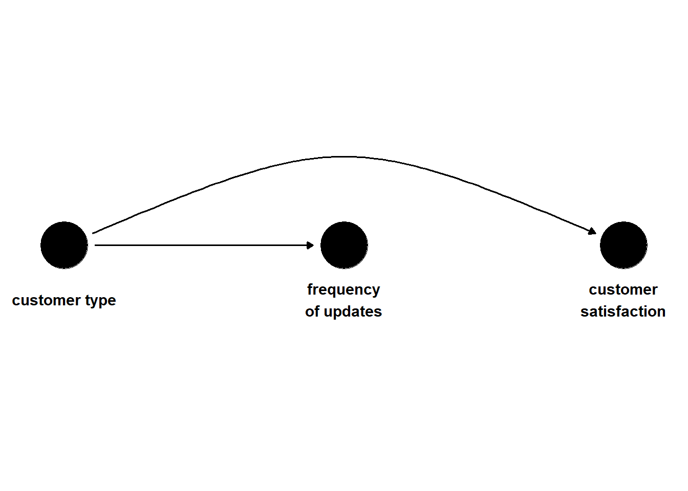
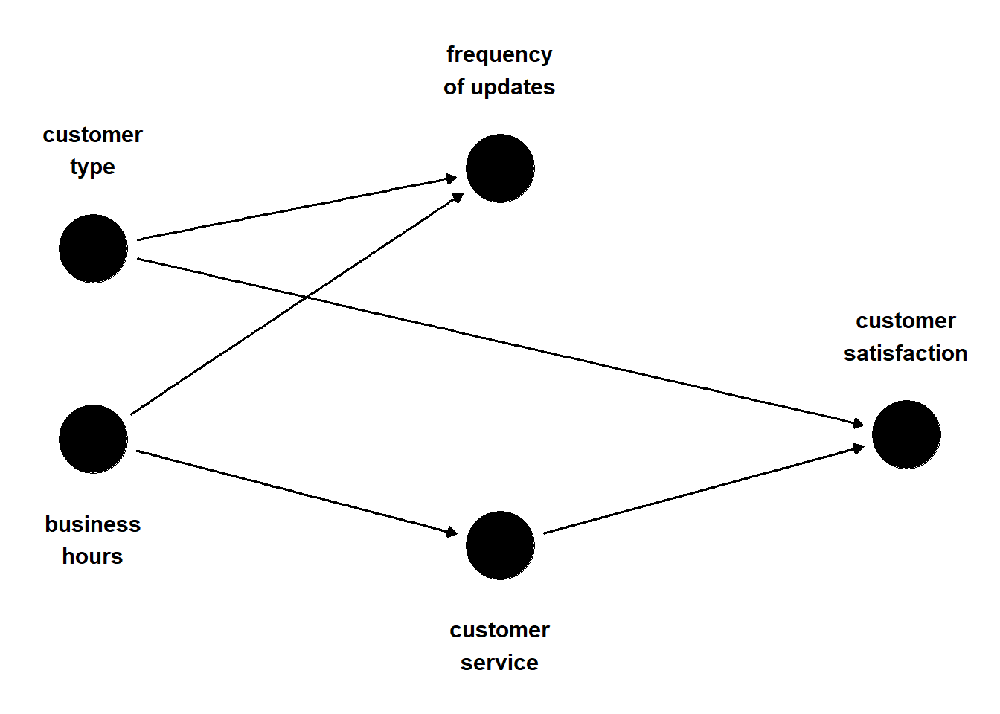
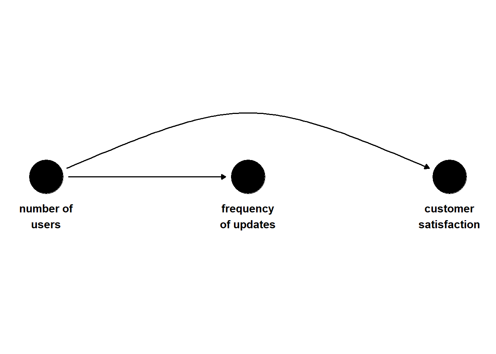
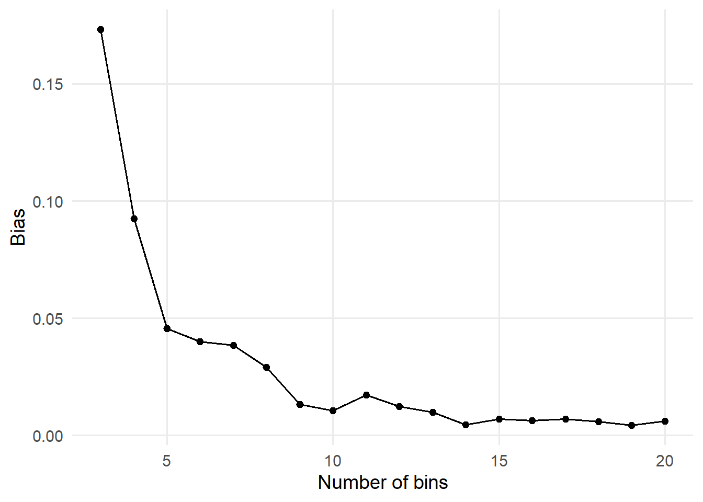
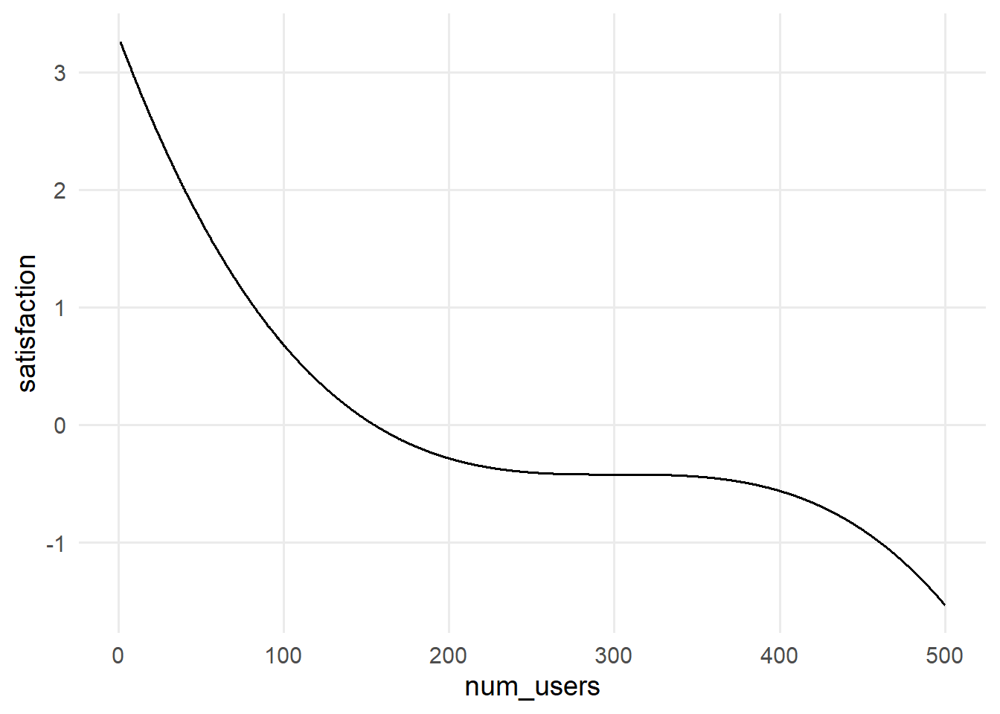
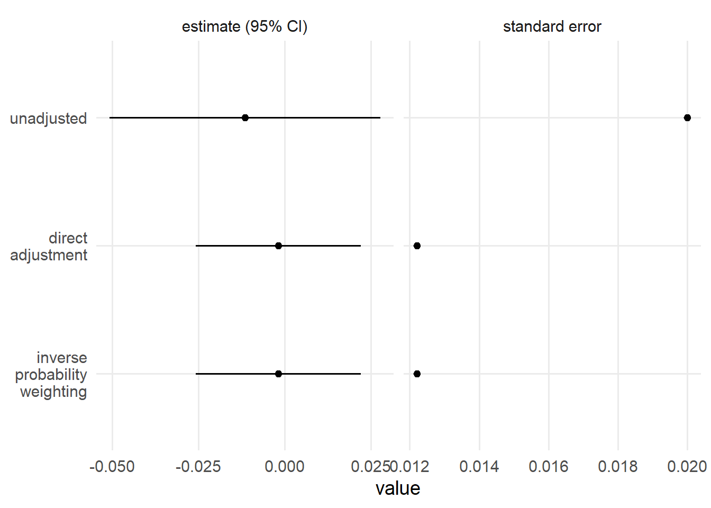

注记Work-in-progress 🚧
You are reading the work-in-progress first edition of Causal Inference in R. This chapter is mostly complete, but we might make small tweaks or copyedits.
From question to answer: stratification and outcome models · 原书逐章中译
来源：Malcolm Barrett、Lucy D’Agostino McGowan、Travis Gerke，Causal Inference in R · From question to answer: stratification and outcome models。 本页为中文翻译；原书代码块、公式、图表交叉引用和引用键均按原文保留。统计图在网页渲染时由 R 代码生成，静态插图直接引用原文件。 原书仓库采用 CC BY-NC-SA 4.0；代码采用 MIT 许可。请遵守原许可证并注明作者。
You are reading the work-in-progress first edition of Causal Inference in R. This chapter is mostly complete, but we might make small tweaks or copyedits.
现在，我们终于把注意力转向回答因果问题的方法，这也是本书其余大部分内容的主题。 潜在结局、反事实和 DAG 让我们能够确定估计因果效应所需满足的条件。 接下来，我们需要用于估计因果效应的工具。 本章是一个过渡：我们将探索如何使用模型，让因果推断变得更加可行。
不过，我们先从完全不使用模型开始。
group_by() 和 summarize() 进行因果推断假设我们正在分析一家软件公司的数据。 我们试图估计软件更新频率对客户满意度的因果效应（满意度以标准化评分衡量，其总体均值为 0，标准差为 1）。 客户是拥有个人用户的组织，整个组织接收每周更新或每日更新。 更新频率并未经过随机分配；如 图 60.1 所示，暴露和结局有一个共同原因——混杂因子——客户类型。 免费客户更可能接收每周更新，而高级客户更可能接收每日更新。 高级客户也更可能具有较高的满意度。 尽管暴露与结局之间没有因果关系，但我们预计 updates 和 satisfaction 之间会因经由 customer_type 的开放后门路径而产生混杂。 这里的混杂由单个二元混杂因子造成。
library(ggdag)
coords1 <- list(
x = c(customer_type = 1, updates = 2, satisfaction = 3),
y = c(customer_type = 0, updates = 0, satisfaction = 0)
)
dag1 <- dagify(
satisfaction ~ customer_type,
updates ~ customer_type,
coords = coords1,
labels = c(
customer_type = "customer type",
updates = "frequency\nof updates",
satisfaction = "customer\nsatisfaction"
)
)
ggdag(dag1, use_text = FALSE, use_edges = FALSE) +
geom_dag_text(
aes(label = label),
nudge_y = c(-0.05, -0.05, -0.05),
color = "black"
) +
geom_dag_edges_arc(curvature = c(0.07, 0)) +
theme_dag() +
ylim(c(0.2, -0.2))
让我们模拟一组符合这一数据生成过程的数据。 在这次模拟中，我们生成 satisfaction(weekly) 和 satisfaction(daily) 的潜在结局。 本书中的许多模拟会跳过这一步，直接模拟观测到的结局；然而，随着我们开始回答因果问题，记住需要满足哪些假设才能进行推断会很有帮助。
set.seed(1)
n <- 10000
satisfaction1 <- tibble(
# Free (0) or Premium (1)
customer_type = rbinom(n, 1, 0.5),
p_exposure = case_when(
# Premium customers are more likely to receive daily updates
customer_type == 1 ~ 0.75,
# Free customers are more likely to receive weekly updates
customer_type == 0 ~ 0.25
),
# Weekly (0) vs Daily (1)
update_frequency = rbinom(n, 1, p_exposure),
# generate the "true" average treatment effect of 0
# to do this, we are going to generate the
# potential outcomes, first if exposure = 0
# `y0` = `satisfaction(weekly)`
# notice `update_frequency` is not in the equation below
# we use rnorm(n) to add the random error term that is normally
# distributed with a mean of 0 and a standard deviation of 1
y0 = customer_type + rnorm(n),
# because the true effect is 0, the potential outcome
# if exposure = 1 is identical
y1 = y0,
# in practice, we will only see one of these
# observed
satisfaction = (1 - update_frequency) * y0 + update_frequency * y1,
observed_potential_outcome = case_when(
update_frequency == 0 ~ "y0",
update_frequency == 1 ~ "y1"
)
) |>
mutate(
satisfaction = as.numeric(scale(satisfaction)),
update_frequency = factor(
update_frequency,
labels = c("weekly", "daily")
),
customer_type = factor(
customer_type,
labels = c("free", "premium")
)
)satisfaction1 |>
select(update_frequency, customer_type, satisfaction)# A tibble: 10,000 x 3
update_frequency customer_type satisfaction
<fct> <fct> <dbl>
1 weekly free -1.16
2 weekly free -1.39
3 daily premium -0.473
4 daily premium -0.608
5 weekly free -0.891
6 daily premium -0.0145
7 weekly premium 0.185
8 weekly premium 0.881
9 weekly premium 0.234
10 weekly free 0.690
# i 9,990 more rows现在，假设两个暴露组具有可交换性，尝试估计 update_frequency 对 satisfaction 的效应。
satisfaction1 |>
group_by(update_frequency) |>
summarise(avg_satisfaction = mean(satisfaction))# A tibble: 2 x 2
update_frequency avg_satisfaction
<fct> <dbl>
1 weekly -0.237
2 daily 0.238当然，根据 DAG 以及我们模拟潜在结局的方式可知，这两个组并不具有可交换性。 更新频率组之间的真实差异为 0，但两组的平均满意度存在差异。 不过，正如 潜在结局与反事实 中讨论的那样，我们还有另一种选择：在混杂因子的各个水平内实现可交换性。 换句话说，我们需要在一个有效调整集的各个水平内实现可交换性。 在本例中，这样的调整集只有一个：customer_type。
satisfaction_strat <- satisfaction1 |>
group_by(customer_type, update_frequency) |>
summarise(
avg_satisfaction = mean(satisfaction),
.groups = "drop"
)
satisfaction_strat# A tibble: 4 x 3
customer_type update_frequency avg_satisfaction
<fct> <fct> <dbl>
1 free weekly -0.458
2 free daily -0.433
3 premium weekly 0.452
4 premium daily 0.463让我们稍作数据整理，在不同客户类型水平内估计更新频率对满意度的效应。 现在我们离正确答案近多了：在客户类型的各个水平内，更新频率不同所对应的满意度没有差异。
satisfaction_strat_est <- satisfaction_strat |>
pivot_wider(
names_from = update_frequency,
values_from = avg_satisfaction
) |>
reframe(estimate = daily - weekly)
satisfaction_strat_est# A tibble: 2 x 1
estimate
<dbl>
1 0.0252
2 0.0110现在取总体平均值，就能得到一个接近 0 的效应。
satisfaction_strat_est |>
# note: we would need to weight this if the confounder
# groups were not equally sized
summarise(estimate = mean(estimate))# A tibble: 1 x 1
estimate
<dbl>
1 0.0181现在考虑有两个二元混杂因子的情况。 假设存在第二个混杂因子：当前是否处于营业时间。 每周更新更可能在营业时间内发生，而每日更新更可能在营业时间外发生。 有些客户的工作时间与公司的营业时间高度重合，有些则不重合；对于后者，由于客户服务在其工作时间内不可用，因此满意度较低。
dag2 <- dagify(
satisfaction ~ customer_service + customer_type,
customer_service ~ business_hours,
updates ~ customer_type + business_hours,
coords = time_ordered_coords(),
labels = c(
customer_type = "customer\ntype",
business_hours = "business\nhours",
updates = "frequency\nof updates",
customer_service = "customer\nservice",
satisfaction = "customer\nsatisfaction"
)
)
ggdag(dag2, use_text = FALSE) +
geom_dag_text(
aes(label = label),
nudge_y = c(-0.35, -0.35, 0.35, 0.35, 0.35),
color = "black"
) +
theme_dag()
让我们模拟这些数据：
satisfaction2 <- tibble(
# Free (0) or Premium (1)
customer_type = rbinom(n, 1, 0.5),
# Business hours (Yes: 1, No: 0)
business_hours = rbinom(n, 1, 0.5),
p_exposure = case_when(
customer_type == 1 & business_hours == 1 ~ 0.75,
customer_type == 0 & business_hours == 1 ~ 0.9,
customer_type == 1 & business_hours == 0 ~ 0.2,
customer_type == 0 & business_hours == 0 ~ 0.1
),
# Weekly (0) vs Daily (1)
update_frequency = rbinom(n, 1, p_exposure),
# More likely during business hours
customer_service_prob = business_hours * 0.9 + (1 - business_hours) * 0.2,
customer_service = rbinom(n, 1, prob = customer_service_prob),
satisfaction = 70 + 10 * customer_type + 15 * customer_service + rnorm(n),
) |>
mutate(
satisfaction = as.numeric(scale(satisfaction)),
customer_type = factor(
customer_type,
labels = c("free", "premium")
),
business_hours = factor(
business_hours,
labels = c("no", "yes")
),
update_frequency = factor(
update_frequency,
labels = c("weekly", "daily")
),
customer_service = factor(
customer_service,
labels = c("no", "yes")
)
)现在，我们需要在两个混杂因子的各个水平内实现可交换性。 在本例中，有两个最小调整集：customer_type + business_hours 和 customer_type + customer_service。 下面分别考察这两个调整集。
在 customer_type 和 business_hours 的各个组合内，更新频率组之间非常接近。
satisfaction2_strat <- satisfaction2 |>
group_by(customer_type, business_hours, update_frequency) |>
summarise(
avg_satisfaction = mean(satisfaction),
.groups = "drop"
)
satisfaction2_strat |>
select(avg_satisfaction, everything())# A tibble: 8 x 4
avg_satisfaction customer_type business_hours
<dbl> <fct> <fct>
1 -1.14 free no
2 -1.16 free no
3 -0.0216 free yes
4 0.0180 free yes
5 -0.0493 premium no
6 -0.0673 premium no
7 1.13 premium yes
8 1.12 premium yes
# i 1 more variable: update_frequency <fct>比之前多做一点数据整理，我们就可以计算总体估计值。
satisfaction2_strat |>
pivot_wider(
names_from = update_frequency,
values_from = avg_satisfaction
) |>
summarise(estimate = mean(daily - weekly))# A tibble: 1 x 1
estimate
<dbl>
1 -0.00415我们也可以在 customer_type 和 customer_service 的各个水平内实现条件可交换性。 由于我们选择纳入调整的变量之间存在由随机性造成的差异，两种方法的答案略有不同，但两种方法都接近零效应。
satisfaction2 |>
group_by(customer_type, customer_service, update_frequency) |>
summarise(
avg_satisfaction = mean(satisfaction),
.groups = "drop"
) |>
pivot_wider(
names_from = update_frequency,
values_from = avg_satisfaction
) |>
summarise(estimate = mean(daily - weekly))# A tibble: 1 x 1
estimate
<dbl>
1 -0.00196只要数据量足够，这种方法就能很好地扩展到多个混杂因子，包括分类混杂因子。 那么，连续混杂因子呢？
我们不再使用二元混杂因子，而是假设有一个连续混杂因子：组织中的用户数量，如 图 60.3 所示。
coords3 <- list(
x = c(num_users = 1, updates = 2, satisfaction = 3),
y = c(num_users = 0, updates = 0, satisfaction = 0)
)
dag3 <- dagify(
satisfaction ~ num_users,
updates ~ num_users,
coords = coords3,
labels = c(
num_users = "number of\nusers",
updates = "frequency\nof updates",
satisfaction = "customer\nsatisfaction"
)
)
ggdag(dag3, use_text = FALSE, use_edges = FALSE) +
geom_dag_text(
aes(label = label),
nudge_y = c(-0.05, -0.05, -0.05),
color = "black"
) +
geom_dag_edges_arc(curvature = c(0.07, 0)) +
theme_dag() +
ylim(c(0.2, -0.2))
用户数量较多的组织会获得更多更新，其满意度评分也略低。
satisfaction3 <- tibble(
# Number of users
num_users = runif(n, min = 1, max = 500),
# Larger customers more likely to have daily updates
update_frequency = rbinom(n, 1, plogis(num_users / 100)),
# with more users come less satisfaction
satisfaction = 70 + -0.2 * num_users + rnorm(n)
) |>
mutate(
satisfaction = as.numeric(scale(satisfaction)),
update_frequency = factor(
update_frequency,
labels = c("weekly", "daily")
)
)如果仍然想使用 group_by 和 summarize()，可以将连续混杂因子分箱，例如按其五分位数分组，并在每个箱内估计因果效应：
satisfaction3_strat <- satisfaction3 |>
mutate(num_users_q = ntile(num_users, 5)) |>
group_by(num_users_q, update_frequency) |>
summarise(
avg_satisfaction = mean(satisfaction),
.groups = "drop"
)
satisfaction3_strat# A tibble: 10 x 3
num_users_q update_frequency avg_satisfaction
<int> <fct> <dbl>
1 1 weekly 1.41
2 1 daily 1.37
3 2 weekly 0.725
4 2 daily 0.682
5 3 weekly 0.0459
6 3 daily -0.00825
7 4 weekly -0.631
8 4 daily -0.689
9 5 weekly -1.36
10 5 daily -1.39 在用户数量分箱后的各个水平内，我们得到的结果大致接近正确答案。 现在计算总体平均值：
satisfaction3_strat |>
ungroup() |>
pivot_wider(
names_from = update_frequency,
values_from = avg_satisfaction
) |>
summarise(estimate = mean(daily - weekly))# A tibble: 1 x 1
estimate
<dbl>
1 -0.0455与二元和分类混杂因子不同，对连续混杂因子进行分箱并不能完全控制该变量；箱越粗，残余混杂就越多，箱越细，结果就越接近连续变量的版本（但每个箱中的取值会更少，见 Tip 60.1）。
让我们看看增加分箱数量会发生什么。 在下图中，我们把正文示例中的 5 个箱改为从 3 个到 20 个箱。 注意，随着分箱数量增加，偏倚会减小。
update_bins <- function(bins) {
satisfaction3 |>
mutate(num_users_q = ntile(num_users, bins)) |>
group_by(num_users_q, update_frequency) |>
summarise(
avg_satisfaction = mean(satisfaction),
.groups = "drop"
) |>
ungroup() |>
pivot_wider(
names_from = update_frequency,
values_from = avg_satisfaction
) |>
summarise(
bins = bins,
estimate = mean(daily - weekly)
)
}
map(3:20, update_bins) |>
bind_rows() |>
ggplot(aes(x = bins, y = abs(estimate))) +
geom_point() +
geom_line() +
labs(y = "Bias", x = "Number of bins")
例如，从下面的输出可以看到，与使用 5 个箱相比，使用 20 个箱时估计值更接近真实值（0）。
satisfaction3 |>
mutate(num_users_q = ntile(num_users, 20)) |>
group_by(num_users_q, update_frequency) |>
summarise(
avg_satisfaction = mean(satisfaction),
.groups = "drop"
) |>
ungroup() |>
pivot_wider(
names_from = update_frequency,
values_from = avg_satisfaction
) |>
summarise(estimate = mean(daily - weekly))# A tibble: 1 x 1
estimate
<dbl>
1 -0.00609不过，和许多好事情一样，增加分箱数量的作用也有极限。 例如，看看尝试分成 30 个箱会发生什么。
satisfaction3 |>
mutate(num_users_q = ntile(num_users, 30)) |>
group_by(num_users_q, update_frequency) |>
summarise(
avg_satisfaction = mean(satisfaction),
.groups = "drop"
) |>
ungroup() |>
pivot_wider(
names_from = update_frequency,
values_from = avg_satisfaction
) |>
summarise(estimate = mean(daily - weekly))# A tibble: 1 x 1
estimate
<dbl>
1 NA估计值为 NA，因为某些箱中没有任何一个暴露组的个体，所以无法估计这些组之间的差异。 此时，分析违反了我们的正值性假设。 这是一个随机性导致的违反，与样本量 10,000 以及分箱数量 30 有关。 由于随机性，30 个箱中至少有一个箱没有任何一个暴露组的个体，因此无法估计因果效应。 这种非参数方法虽然灵活，但受到样本量的限制。 参数模型很有用，因为在一定假设下，它们允许我们进行外推，从而提高效率（前提是这些假设成立；详见 参数化结局模型）。
我们一直使用 group_by() 和 summarize() 采用的方法通常称为分层。 也可以把它看作一种非参数方法。 我们没有使用统计模型中的参数化形式来限制变量的形式，例如线性回归可能采取的形式。 （对于连续混杂因子，这一点只部分成立，因为按连续变量的所有取值进行分层并不现实。）
对于简单问题或数据量很大的情况，分层可能非常有效，因为它有时可以避免模型设定错误的问题。 然而，当混杂因子很多时（尤其是连续混杂因子），我们很快就会遇到维度灾难：不同混杂因子水平组合下的观测数太少，使这种方法变得不切实际。
可以把分层理解为计算条件均值。 条件均值的一个更一般化的扩展是多变量线性回归。 当我们以 outcome ~ exposure + confounder1 + confounder2 + ... 的形式使用 lm() 拟合模型时，拟合的就是所谓的结局模型；之所以这样称呼，是因为我们将暴露和混杂因子作为自变量，以结局作为因变量进行拟合。 这有时也称为直接调整或回归调整，因为我们直接在回归模型中调整混杂因子。 让我们使用 lm() 计算本例中两个二元混杂因子情况下的效应：
library(broom)
lm(
satisfaction ~ update_frequency + customer_type + business_hours,
data = satisfaction2
) |>
tidy(conf.int = TRUE) |>
filter(term == "update_frequencydaily") |>
select(estimate, starts_with("conf"))# A tibble: 1 x 3
estimate conf.low conf.high
<dbl> <dbl> <dbl>
1 -0.00906 -0.0411 0.0230对于连续混杂因子，这种方法同样效果很好，因为不再需要先分箱就能得到正确答案：
lm(
satisfaction ~ update_frequency + num_users,
data = satisfaction3
) |>
tidy(conf.int = TRUE) |>
filter(term == "update_frequencydaily") |>
select(estimate, starts_with("conf"))# A tibble: 1 x 3
estimate conf.low conf.high
<dbl> <dbl> <dbl>
1 0.00153 -0.000595 0.00366不过，这种推广并非没有代价：现在我们引入了参数统计模型，以便在数据稀疏的区域进行估计。 对于 satisfaction ~ update_frequency + num_users，得到的估计值恰好是正确答案，因为 lm() 背后的统计模型与我们的模拟完全匹配。 例如，satisfaction 与 num_users 之间的关系是线性的，因此拟合该模型时不会受到维度问题的影响（尽管线性回归在行数和列数方面也有自身的限制）。 换句话说，现在我们依赖于正确的函数形式，即模型中变量之间关系的数学表达形式（更多细节见 Tip 60.2）。 暴露和混杂因子都需要采用正确的函数形式。 要做好建模，需要理解这些变量与结局之间关系的性质。
在正文中，我们模拟的结局与混杂因子之间的关系是线性的，也就是说，它完全满足 lm() 的基础假设，所以拟合参数模型时得到了正确答案。 如果模拟数据不符合 lm() 的基础假设，会发生什么？ 让我们来看看。
set.seed(11)
satisfaction4 <- tibble(
# Number of users
num_users = runif(n, 1, 500),
# Larger customers more likely to have daily updates
update_frequency = rbinom(n, 1, plogis(num_users / 100)),
# non-linear relationship between satisfaction and number of users
satisfaction = 70 - 0.001 * (num_users - 300)^2 - 0.001 * (num_users - 300)^3
) |>
mutate(
satisfaction = as.numeric(scale(satisfaction)),
update_frequency = factor(
update_frequency,
labels = c("weekly", "daily")
)
)
ggplot(satisfaction4, aes(x = num_users, y = satisfaction)) +
geom_line()
从上图可以看到，现在混杂因子（用户数量）与结局（满意度）之间呈现非线性关系。 让我们看看对这些数据拟合一个（错误的）参数模型会发生什么。
lm(
satisfaction ~ update_frequency + num_users,
data = satisfaction4
) |>
tidy(conf.int = TRUE) |>
filter(term == "update_frequencydaily") |>
select(estimate, starts_with("conf"))# A tibble: 1 x 3
estimate conf.low conf.high
<dbl> <dbl> <dbl>
1 -0.189 -0.219 -0.159我们的估计值离真实值很远（真实值应为 0）；真实值甚至不在置信区间内。 哪里出了问题？ 我们的参数模型假设用户数量与满意度之间的关系是线性的，但我们生成的数据呈现非线性关系。 有一种解决方案仍然允许使用参数模型：如果我们知道真实的函数形式，就可以使用它。 看看这样会得到什么结果。
lm(
satisfaction ~ update_frequency + poly(num_users, 3),
data = satisfaction4
) |>
tidy(conf.int = TRUE) |>
filter(term == "update_frequencydaily") |>
select(estimate, starts_with("conf"))# A tibble: 1 x 3
estimate conf.low conf.high
<dbl> <dbl> <dbl>
1 1.47e-15 1.20e-15 1.74e-15很好！ 现在，这个模型与数据的生成方式完全一致，我们再次得到了完全正确的答案。 在现实世界中，我们通常不知道数据生成机制，但仍然可以拟合灵活的参数模型。 一个很好的方法是使用自然三次样条。
lm(
satisfaction ~ update_frequency + splines::ns(num_users, 3),
data = satisfaction4
) |>
tidy(conf.int = TRUE) |>
filter(term == "update_frequencydaily") |>
select(estimate, starts_with("conf"))# A tibble: 1 x 3
estimate conf.low conf.high
<dbl> <dbl> <dbl>
1 0.00216 -0.00258 0.00690我们也可以使用原来的非参数方法；如果将数据分成 20 个箱进行分层，也能得到偏倚较小的估计值（即非常接近真实值 0）。
satisfaction4_strat <- satisfaction4 |>
mutate(num_users_q = ntile(num_users, 20)) |>
group_by(num_users_q, update_frequency) |>
summarise(
avg_satisfaction = mean(satisfaction),
.groups = "drop"
)
satisfaction4_strat |>
ungroup() |>
pivot_wider(
names_from = update_frequency,
values_from = avg_satisfaction
) |>
summarise(estimate = mean(daily - weekly))# A tibble: 1 x 1
estimate
<dbl>
1 -0.00817之后我们还会探索使用机器学习等数据自适应方法来减弱这一假设（?sec-causal-ml）。
当我们满足所用模型估计量的假设时，结局回归可以发挥很好的作用。 例如，如果我们理解结局与回归模型中各变量之间的关系，并且相信模型的假设，尤其是线性假设，那么 OLS 可能非常有益。 从统计角度看，它的效率很高（也就是说，我们会得到较小的标准误）。 此外，无需使用 Bootstrap（见 ?sec-appendix-bootstrap），我们也能得到名义上正确的置信区间。 科学家以及其他分析数据的人通常也熟悉线性回归，因此更容易理解你是如何计算因果效应的。 事实上可以说，当结局与暴露之间存在线性关系，并且满足 因果假设 中列出的因果假设时，相关就是因果。
那么，我们为什么不总是使用结局模型来计算因果效应？ 首先，与对结局建模相比，我们可能更有把握对暴露建模（例如逆概率模型）。 我们将在 ?sec-g-comp 和 ?sec-dr 中进一步探讨这一想法。 相关地，当结局为二元变量时，根据事件数量选择其中一种方法可能更合理。 例如，如果结局罕见而暴露并不罕见，使用倾向评分方法在统计上可能更有效。 其次，使用结局模型有时难以得到我们所针对的估计值——即对一个精确问题的回答——我们将在 ?sec-estimands 中更深入地讨论这一点。
此外，结局模型给出的是条件效应。 换句话说，在描述估计系数时，我们经常会说：“暴露增加一个单位，会使结局改变 coefficient，同时模型中的所有其他变量保持不变。” 在因果推断中，我们通常对边际效应感兴趣。 从数学上说，这意味着我们希望针对某个要估计因果效应的特定人群，在该人群中各因素的分布上对所关注的效应取平均。 当结局是连续的、效应是线性的，并且暴露效应与人群的其他因素之间不存在交互作用时，条件效应与边际效应之间的区别在很大程度上只是语义上的。 两者的估计值会完全相同。
如果模型中存在交互作用，也就是说，暴露对结局的影响取决于某个其他因素，那么我们就不再有一个可以解释的单一系数。 我们可能希望在考虑目标人群中该因素分布的情况下估计边际效应。 为什么？ 我们的最终目标是判断是否应该建议目标人群接受该暴露，因此我们想知道，平均而言，这种暴露是否有益。
考虑 图 60.1 的一种变体，其中更新频率确实会对满意度产生因果效应，但该效应因客户类型而异。 对于高级客户，每日更新会使满意度提高 5 分。 对于免费客户，每日更新会使满意度降低 5 分。 改变更新频率的效应是异质的，取决于客户类型。 是否值得让所有人都改为每日更新，取决于高级客户与免费客户的分布。
如果 50% 的客户是高级客户，50% 是免费客户，那么切换为每日更新的平均效应为：
\((0.5 * 5) + (0.5 * -5) = 0\)
如果 100% 的客户都是高级客户，那么平均效应为：
\((1 * 5) + (0 * -5) = 5\)
如果 100% 的客户都是免费客户，那么平均效应为：
\((0 * 5) + (1 * -5) = -5\)
边际化告诉我们数据中协变量分布对应的平均效应。 当然，我们可能希望按客户类型估计因果效应；我们将在 ?sec-interaction 中深入讨论交互作用效应。
在 Logistic 回归和 Cox 回归模型中，条件效应会更加复杂；正如我们将在 ?sec-non-collapse 中看到的，这类模型的条件系数会根据模型中包含的变量不同而回答完全不同的问题。
有时我们也不能使用结局模型。 第一种情况是，我们认为自己无法满足无混杂方法的假设。 在这种情况下，我们同样不能使用逆概率加权及其他相关方法。 不过，我们可能可以使用另一种方法，例如工具变量分析、回归不连续或双重差分（?sec-iv-friends 和 ?sec-did；下面也会对这些方法进行总结）。 第二种情况是暴露和混杂随时间变化。 线性回归无法在不产生偏倚的情况下估计这类效应，因此需要使用逆概率加权或 g 计算等方法才能正确计算。 在本书的大部分内容中，我们将分析简单的前后数据：有基线数据，在单个时间点发生暴露，并在暴露之后出现结局。 在 ?sec-longitudinal 及其他章节中，我们将讨论更复杂的问题和数据。
正如我们所见，使用分层和多变量线性回归等简单方法也可以进行因果推断。 不过，在本书其余部分，我们将重点讨论其他因果方法；这些方法让我们在回答想要提出的问题时拥有更大的灵活性。 下面简要总结我们将要介绍的一些无混杂性方法及其作用。
虽然本书主要关注无混杂性方法，但后文还会介绍依赖其他假设的方法（?sec-iv-friends 和 ?sec-did）。 下面简要总结什么时候我们可能希望探索这些方法，而不是努力实现可交换性：
随机试验减轻了我们进行因果推断时需要作出的许多假设。 随机化成功后，我们无需控制任何混杂因子，因为它们并不存在。 不过，对于随机分配的暴露，因果方法仍然有用。
让我们考虑 图 60.2 的一个变体：更新频率被随机分配给每位客户；客户类型和营业时间仍然是客户满意度的原因。 换句话说，它们会导致结局，但不会导致暴露。 我们可以使用未经调整的回归模型或简单的均值差异来获得有效效应。 不过，正如我们在 用 DAG 表达因果问题 中讨论的那样，纳入会导致结局、但不会导致暴露的因素，可以提高估计值的统计精确性。 下面考察三种方法：未经调整的 OLS 结局模型、经过调整的 OLS 结局模型（直接调整）以及逆概率加权模型。 在 图 60.4 中，三种方法都给出了无偏效应。 基于倾向评分的效应是边际效应，而结局模型的效应是条件效应。 由于我们模拟数据的方式，这两类效应完全相同。 不过，未经调整的方法具有更宽的置信区间，相应地也有更大的标准误。 直接调整方法和逆概率加权的标准误更小，因此置信区间更窄。 数学上已经证明，像这样在随机试验中使用倾向评分调整基线因素，总是会比未经调整的估计值提高精确性，而且其获得的精确性提升等同于直接调整所带来的提升 (Williamson, Forbes, 和 White 2014)。
satisfaction_randomized <- tibble(
# Free (0) or Premium (1)
customer_type = rbinom(n, 1, 0.5),
# Business hours (Yes: 1, No: 0)
business_hours = rbinom(n, 1, 0.5),
# Weekly (0) vs Daily (1), now random
update_frequency = rbinom(n, 1, 0.5),
# More likely during business hours
customer_service_prob = business_hours *
0.9 +
(1 - business_hours) * 0.2,
customer_service = rbinom(n, 1, prob = customer_service_prob),
satisfaction = 70 + 10 * customer_type + 15 * customer_service + rnorm(n),
) |>
mutate(
satisfaction = as.numeric(scale(satisfaction)),
customer_type = factor(
customer_type,
labels = c("free", "premium")
),
business_hours = factor(
business_hours,
labels = c("no", "yes")
),
update_frequency = factor(
update_frequency,
labels = c("weekly", "daily")
),
customer_service = factor(
customer_service,
labels = c("no", "yes")
)
)
plot_estimates <- function(d) {
unadj_model <- lm(satisfaction ~ update_frequency, data = d) |>
tidy(conf.int = TRUE) |>
mutate(
term = if_else(
term == "update_frequencydaily",
"update_frequency",
term
)
) |>
filter(term == "update_frequency") |>
mutate(model = "unadjusted")
adj_model <- lm(
satisfaction ~ update_frequency + business_hours + customer_type,
data = d
) |>
tidy(conf.int = TRUE) |>
mutate(
term = if_else(
term == "update_frequencydaily",
"update_frequency",
term
)
) |>
filter(term == "update_frequency") |>
mutate(model = "direct\nadjustment")
df <- d |>
mutate(across(where(is.factor), as.integer)) |>
mutate(update_frequency = update_frequency - 1) |>
as.data.frame()
x <- PSW::psw(
df,
"update_frequency ~ business_hours + customer_type",
weight = "ATE",
wt = TRUE,
out.var = "satisfaction"
)
psw_model <- tibble(
term = "update_frequency",
estimate = x$est.wt,
std.error = x$std.wt,
conf.low = x$est.wt - 1.96 * x$std.wt,
conf.high = x$est.wt + 1.96 * x$std.wt,
statistic = NA,
p.value = NA,
model = "inverse\nprobability\nweighting"
)
models <- bind_rows(unadj_model, adj_model, psw_model) |>
mutate(
model = factor(
model,
levels = c(
"unadjusted",
"direct\nadjustment",
"inverse\nprobability\nweighting"
)
)
)
models |>
select(model, estimate, std.error, starts_with("conf")) |>
pivot_longer(
c(estimate, std.error),
names_to = "statistic"
) |>
mutate(
conf.low = if_else(statistic == "std.error", NA, conf.low),
conf.high = if_else(statistic == "std.error", NA, conf.high),
statistic = case_match(
statistic,
"estimate" ~ "estimate (95% CI)",
"std.error" ~ "standard error"
)
) |>
ggplot(aes(value, fct_rev(model))) +
geom_point() +
geom_errorbarh(
aes(xmin = conf.low, xmax = conf.high),
height = 0
) +
facet_wrap(~statistic, scales = "free_x") +
theme(axis.title.y = element_blank())
}
plot_estimates(satisfaction_randomized)
不过，这两种调整方法调整的并不是混杂因子。 相反，它们控制的是数据中的随机变异。 对于直接调整，我们通过考虑结局中的变异来实现这一点。 对于逆概率加权，我们考虑的是处理组之间在与结局相关的变量上因偶然产生的不平衡。
因果方法还可以帮助我们处理在 研究设计何时支持因果推断？ 中现实随机试验里看到的一些因果假设违反。 在 ?sec-longitudinal 和 ?sec-iv-friends 中，我们将探讨这些方法如何帮助处理不依从和失访——这是随机试验中两种常见的偏倚来源。
现在，让我们把注意力转向一个真实数据的例子。 我们将从匹配和逆概率加权等倾向评分方法开始，因为它们具有一个特殊性质：我们可以在不查看暴露与结局之间关系的情况下，对暴露与混杂因子之间的关系进行建模。
让我们继续探索如何回答因果问题。